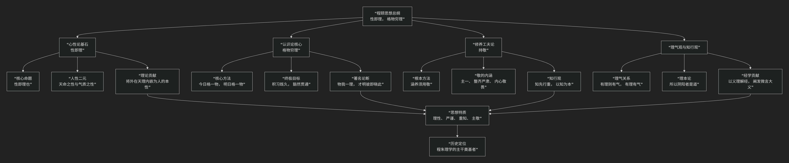

程伊川
基于程颐（伊川先生）核心哲学思想
程颐（世称伊川先生）是宋代理学的奠基人之一，与其兄程颢并称“二程”。但兄弟二人的思想风格迥异。程颐的核心思想可以概括为：一个以“性即理”为理论基石，以“格物穷理”为认知路径，以“持敬”为修养工夫，结构严谨、富于理性精神的哲学体系。他特别强调知识的积累和理性的探索，为后世朱熹集大成的理学体系奠定了主干。
程颐的思想体系逻辑严密，其核心架构与内在逻辑可以通过下图清晰地展现：

以下，我们将沿此逻辑脉络，深入解析程颐思想的核心要义。
—
一、心性论基石：“性即理”
这是程颐最根本的哲学贡献，是与程颢“仁者浑然与物同体”的体验路径不同的、更具分析性的理论建构。
核心命题：“性即理也。” 这一命题将《中庸》的“天命之谓性”与《易传》的“穷理尽性”贯通起来。
含义：人与万物所禀受于“天”的本性（性），其内容就是普遍的、客观的“天理”。换言之，人的内在道德本性（仁、义、礼、智）就是宇宙最高法则“天理”在人与上的体现。
人性二元论：他继承并明确了张载的区分，将人性分为：
天命之性：源于天理，是纯然至善的，是人之为人的根本。
气质之性：人禀受阴阳二气而生，气有清浊昏明，故气质之性有善有恶。人的贤愚善恶，源于“气禀”的遮蔽。
理论意义：“性即理”的命题，将外在的、客观的“天理”收归于人的内在本性，为道德实践找到了坚实的内在依据，同时也为“格物穷理”提供了可能性——因为物性、人性皆是天理的表现，故穷究物理即可通达天性。
二、认识论核心：“格物穷理”
这是程颐哲学中最具影响力也最富理性精神的部分，后被朱熹发扬光大。
核心方法：“格物穷理”。 “格”即“至”、“穷尽”之意。“格物”就是深入探究事物，直至穷尽其背后的“所以然”之理。
著名论述：“今日格一件，明日又格一件，积习既多，然后脱然自有贯通处。”
这是一个从 知识的逐渐积累 到 智慧的豁然贯通 的过程。他强调从具体事物入手，一件一件地研究，久而久之，便能触类旁通，领悟到那个统一的、普遍的“天理”。
理论依据：“万物皆是一理”。一草一木皆有其“理”，而这个“理”与人心中的“理”是相通的。因此，“才明彼，即晓此” ，明白了外在事物的理，也就启发了对内心天理的认识。
三、修养工夫论：“持敬”
与“格物”的外向求知相配合，程颐提出了内向的修养工夫——“主敬”。
根本方法：“涵养须用敬，进学则在致知。” 修养心性需要用“敬”的工夫，增进学问则需要“格物致知”。二者如鸟之双翼，不可偏废。
“敬”的内涵：
主一之谓敬：内心专一，心无旁骛，不分散注意力。
整齐严肃：保持外在容貌的庄重和内心的敬畏。
“有主则虚”：心中有了“敬”这个主心骨，才能达到虚静清明、不被外物牵引的状态。
与“静”的区别：他区分“敬”与“静”，认为“敬”是 积极的、动态的修养，并非心如死灰般的绝对静止，而是“动亦敬，静亦敬”，在任何状态下都保持内心的警觉与主宰。
四、理气观与知行观
理气关系：程颐明确提出了 “理本论”。他认为 “有理则有气” ，理在逻辑上先于气。“所以阴阳者是道” ，阴阳是气，是现象；支配阴阳变化的内在规律才是“道”（理）。这为朱熹的“理在气先”论奠定了基础。
知行观：他主张 “知先行重”。深刻的认识（知）是行动（行）的前提和指导，“以知为本” 。“知之深，则行之必至”，没有真知，便没有自觉的、正确的行动。他更强调“知”的优先性。
—
五、核心要义总结
理论维度 |
核心命题 |
关键概念与贡献 |
|---|---|---|
心性论 |
“性即理也”：人的本性即是天理，为道德找到了内在根据。 |
性即理、天命之性、气质之性 |
认识论 |
“格物穷理”：通过今日格一物，明日格一物的积累，最终豁然贯通天理。 |
格物致知、积习贯通、物我一理 |
工夫论 |
“涵养须用敬”：以”主一”和”整齐严肃”的”敬”的工夫来涵养心性。 |
主敬、涵养用敬、整齐严肃 |
理气观 |
“有理则有气”，”所以阴阳者是道”：确立了”理”为本的本体论。 |
理本论、理气关系、道器关系 |
六、思想特质与历史影响
理性主义色彩：与程颢重体验、重境界的风格不同，程颐的思想 结构严谨、析理精密、富于逻辑性，展现出强烈的理性精神。
重知倾向：他极其强调“知”的重要性，认为道德实践必须建立在理性认知的基础上，这使其思想带有 主智主义 倾向。
程朱理学的主干：其“性即理”、“格物穷理”、“持敬”等核心思想，几乎被朱熹全盘继承并系统化，构成了 程朱理学体系的主干。因此，后世所称的“程朱理学”，其中“程”主要指程颐。
严肃的学风：其“持敬”的修养论，也塑造了后世理学家严肃、庄重的人格风貌。
七、总结
总而言之，程颐的核心思想在于，他是一位 “理性的建筑师”和“知识的耕耘者” 。他教导我们，通达天理的道路，是一条需要严谨、耐心和持续努力的理性探索之路。它既需要向外“格物”以穷究事理，也需要向内“持敬”以涵养本心，最终通过知识的积累达到对宇宙普遍法则的觉悟。
他的全部工作是为 儒家成德之学 构建了一套系统而精密的方法论和认识论。在理学开创期，他与其兄程颢分别开启了“尊德性”与“道问学”的两大路向。程颐所开创的这条重知、重学、重积累的路径，经由朱熹的集大成，成为了宋明理学中最具统治力的正统。在这个意义上，程颐不仅是理学的奠基人，更是塑造了中国后期传统社会思维模式的关键人物。
- Grok
- 基于程颐（伊川先生）哲学核心思想的陈京元“寻衅滋事罪”案分析评论
- An Analysis of the Chen Jingyuan “Picking Quarrels and Provoking Trouble” Case Based on Cheng Yi’s (Yichuan) Core Philosophical Ideas
- 一、程颐哲学核心思想概述：理气论与存天理灭人欲
- I. Overview of Cheng Yi’s Core Philosophical Ideas: Theory of Li and Qi and Preserving Heavenly Principle, Extinguishing Human Desires
- 二、以程颐哲学核心思想评析本案
- II. Analysis of the Case Based on Cheng Yi’s Core Philosophical Ideas
- 三、结语：重振天理觉醒，推动仁义新生
- III. Conclusion: Reviving Heavenly Principle Awakening for Benevolent Rebirth
- Copilot
- ChatGPT
- DeepSeek
- Gemini
- Qwen
[程颢和程颐]